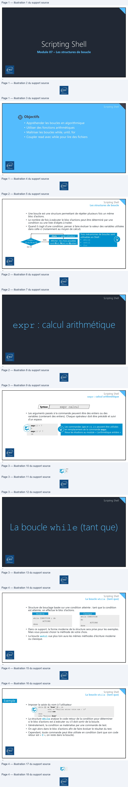
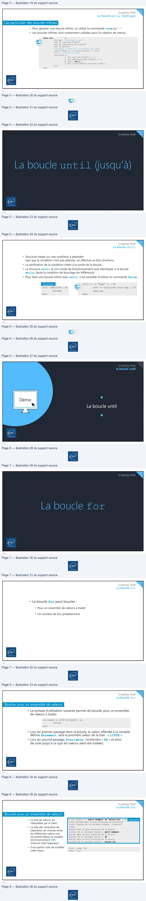
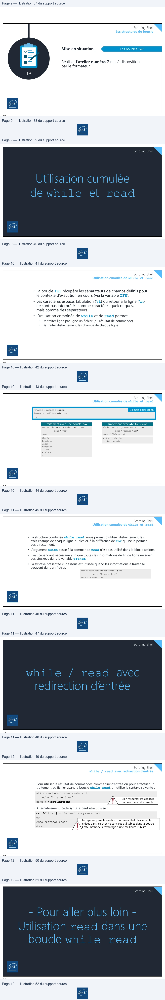
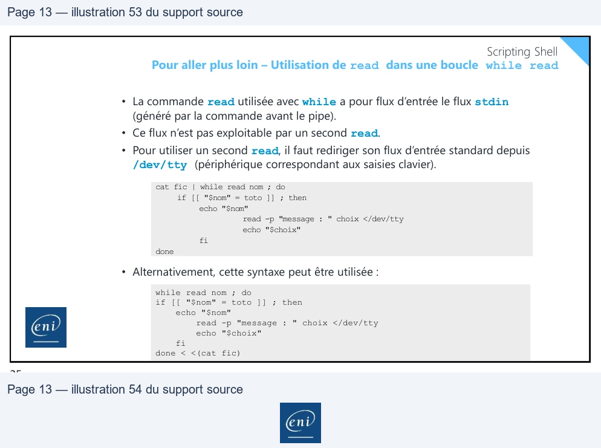
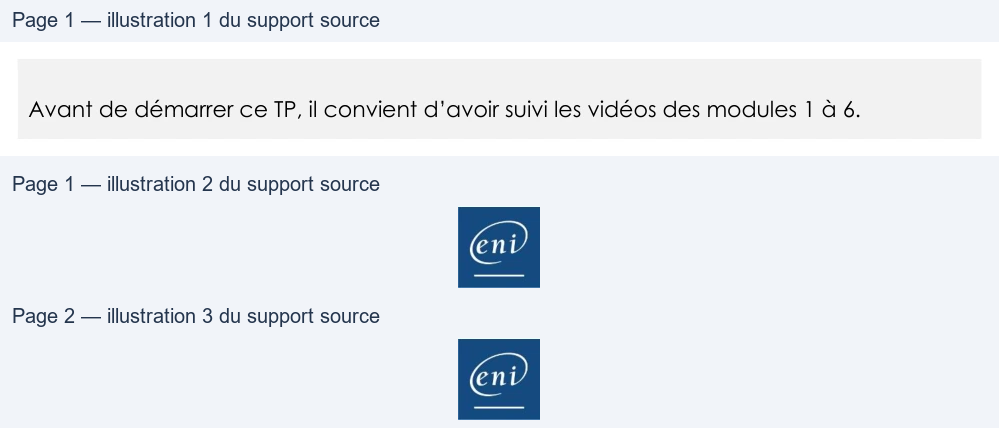
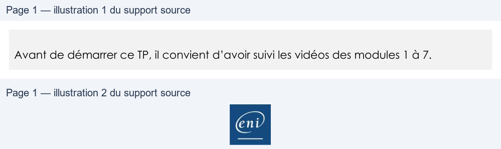
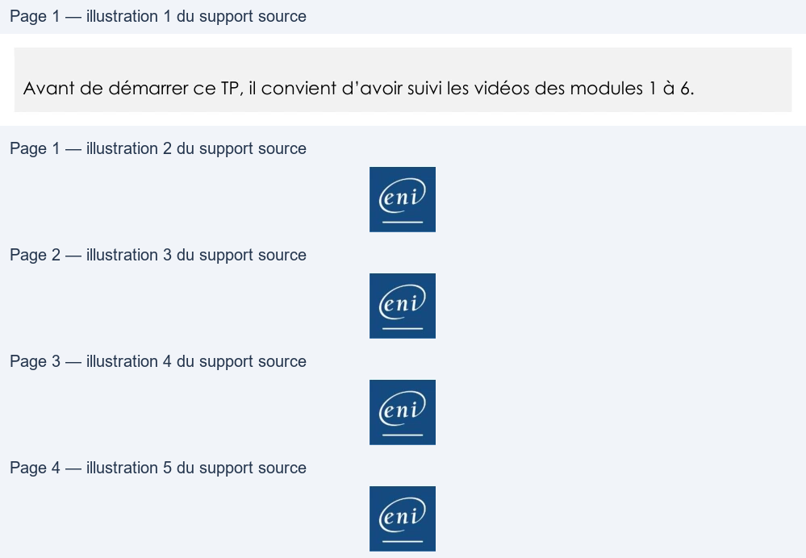
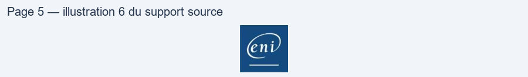
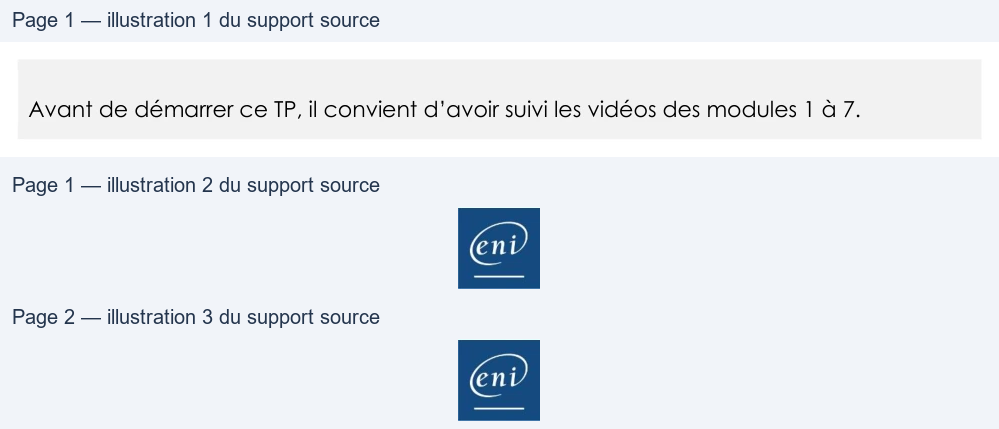

Module 07 — Les structures de boucle¶
La transcription du support Drive et l’aide pédagogique sont séparées pour rendre leur provenance explicite.
SOURCE DRIVE · TRANSCRIPTION DU SUPPORT
Le contenu des documents du dossier TSSR est transcrit ci-dessous, page par page. Les textes, tableaux et illustrations sont intégrés à la page Web ; aucun PDF ENI n’est diffusé par ce lecteur. Les versions et les consignes restent celles des supports de formation. Les compléments IA sont conservés dans leur onglet distinct.
Support · Module 07 - Support de cours · 13 pages transcrites
Page 1
Scripting Shell
Module 07 – Les structures de boucle
1
Scripting Shell
Objectifs
• Appréhender les boucles en algorithmique
• Utiliser des fonctions arithmétiques
• Maîtriser les boucles while, until, for
• Coupler read avec while pour lire des fichiers
2
Page 2
Scripting Shell
Les structures de boucle
• Une boucle est une structure permettant de répéter plusieurs fois un même
bloc d’actions.
• Le nombre de fois à exécuter le bloc d’actions peut être déterminé par une
condition ou une liste d’objets à traiter.
• Quand il s’agit d’une condition, penser à faire évoluer la valeur des variables utilisées
dans celle-ci (notamment au moyen de calcul).
choix <= saisie utilisateur
NON
Choix =
O ou N ou Q
Afficher : les choix possibles
sont O(ui), N(on) ou Q(uitter)
Trois mécanismes de boucles sont utilisables en Shell : • while • until • for
OUI
3
Scripting Shell
expr : calcul arithmétique
4
Texte relevé dans les illustrations
Fu
pan
A
End
Page 3
Scripting Shell
expr : calcul arithmétique
expr calcul Syntaxe
• Les arguments passés à la commande peuvent être des entiers ou des
variables (contenant des entiers). Chaque opérateur doit être précédé et suivi
d’un espace.
Les commandes let et ((…)) peuvent être utilisées en remplacement de la commande expr. Nous les étudions au module « L’arithmétique entière »
expr 2 + 7 9 expr 2 \* 7 14
5
Scripting Shell
La boucle while (tant que)
6
Texte relevé dans les illustrations
CE D
N
End
Page 4
Scripting Shell
La boucle while (tant que)
• Structure de bouclage basée sur une condition atteinte : tant que la condition
est atteinte, on effectue le bloc d’actions.
Moderne
while CONDITION ; do
Classique while CONDITION do
ACTIONS done
ACTIONS done
• Dans ce support, la forme moderne de la structure sera prise pour les exemples.
Mais vous pouvez choisir la méthode de votre choix.
• La boucle until vue plus loin aura les mêmes méthodes d’écriture moderne ou classique.
7
Scripting Shell
La boucle while (tant que)
Exemple
• Imposer la saisie du nom à l’utilisateur
while [[ -z "$nom" ]] ; do
echo -e "Veuillez entrer votre nom : \c" read nom done echo "Bonjour $nom"
• La structure while analyse le code retour de la condition pour déterminer si le bloc d’actions est à exécuter ou s’il doit sortir de la boucle. • Généralement, la condition se matérialise par une commande de test. • On agit alors dans le bloc d’actions afin de faire évoluer le résultat du test. • Cependant, toute commande peut être utilisée en condition (tant que son code retour est « 0 », on reste dans la boucle).
8

Page 5
Scripting Shell
La boucle while (tant que)
Cas particulier des boucles infinies
• Pour générer une boucle infinie, on utilise la commande true ou ":". • Les boucles infinies sont notamment utilisées pour la création de menus.
while true ; do echo menu # Affichage du menu echo "1) copie des fichiers" echo "2) restauration des fichiers" echo "q) Quitter" # Récupérer la saisie de l'utilisateur dans $choix read -p "Taper 1, 2 ou q pour continuer : " choix # Tester la valeur de $choix case $choix in
1) echo copie des fichiers; […] ;; 2) echo restauration des fichiers; […] ;; q) clear ; exit 0 ;; *) echo -e "\e[41msaisie incorrecte \e[0m" ;; esac done
9
Scripting Shell
La boucle until (jusqu’à)
10
Texte relevé dans les illustrations
©
N
Page 6
Scripting Shell
La boucle until
• Structure basée sur une condition à atteindre :
tant que la condition n’est pas atteinte, on effectue un bloc d’actions.
• La vérification de la condition mène à la sortie de la boucle. • La structure until et son mode de fonctionnement sont identiques à la boucle while. Seule la condition de bouclage les différencie.
• Pour faire une boucle infinie avec until, il est possible d’utiliser la commande false.
until [[ -n "$age" ]] ; do
Structure until CONDITION ; do
echo -e "Saisissez votre age : \c" read age done
ACTIONS Done
11
Scripting Shell
la boucle until
Démo
La boucle until
12
Texte relevé dans les illustrations
_
|
K
©
End
Page 7
Scripting Shell
La boucle for
13
Scripting Shell
La boucle for
• La boucle for peut boucler :
• Pour un ensemble de valeurs à traiter
• Un nombre de fois prédéterminé
14
Texte relevé dans les illustrations
A
Page 8
Scripting Shell
La boucle for
Boucler pour un ensemble de valeurs
• La syntaxe d’utilisation suivante permet de boucler pour un ensemble
de valeurs à traiter.
for element in LISTE DE VALEURS ; do
ACTIONS done
• Lors du premier passage dans la boucle, la valeur affectée à la variable définie $element sera la première valeur de la liste : « LISTE ». • Lors du second passage, $variable contiendra « DE » et ainsi de suite jusqu’à ce que les valeurs aient été traitées.
15
Scripting Shell La boucle for
Boucler pour un ensemble de valeurs
Exemple
• La liste de valeurs est
interprétée par le Shell.
$ for valeurs in "petit exemple" de "boucle for" ; do >echo "Entrée dans le bloc d’actions de la boucle" >echo "contenu de la variable valeurs : $valeurs" >done Entrée dans le bloc d’actions de la boucle contenu de la variable valeurs : petit exemple Entrée dans le bloc d’actions de la boucle contenu de la variable valeurs : de Entrée dans le bloc d’actions de la boucle contenu de la variable valeurs : boucle for
• La liste des caractères de séparation de champs entre les différentes valeurs est récupérée depuis la variable d’environnement IFS (Internal Field Separator).
# set | grep ^IFS IFS=$' \t\n'
• Il est parfois utile de modifier
cette valeur.
16
Lecture continue du texte source
Scripting Shell
La boucle for
Boucler pour un ensemble de valeurs
• La syntaxe d’utilisation suivante permet de boucler pour un ensemble
de valeurs à traiter.
for element in LISTE DE VALEURS ; do
ACTIONS
done
• Lors du premier passage dans la boucle, la valeur affectée à la variable
définie $element sera la première valeur de la liste : « LISTE ».
• Lors du second passage, $variable contiendra « DE » et ainsi
de suite jusqu’à ce que les valeurs aient été traitées.
15
Scripting Shell
La boucle for
Boucler pour un ensemble de valeurs
• La liste de valeurs est $ for valeurs in "petit exemple" de "boucle for" ; do Exemple
interprétée par le Shell. >echo>echo "Entrée"contenudansde lalevariablebloc d’actionsvaleursde: la$valeurs"boucle"
• La liste des caractères de >done
séparation de champs entre Entrée dans le bloc d’actions de la boucle
les différentes valeurs est contenuEntrée dansde lalevariablebloc d’actionsvaleursde: lapetitboucleexemple
récupérée depuis la variable contenu de la variable valeurs : de
d’environnement IFS Entrée dans le bloc d’actions de la boucle
(Internal Field Separator). contenu de la variable valeurs : boucle for
• Il est parfois utile de modifier # set | grep ^IFS
cette valeur. IFS=$' \t\n'
16
Page 9
Scripting Shell
Les structures de boucle
Les boucles for
Mise en situation
Réaliser l’atelier numéro 7 mis à disposition
par le formateur
TP
17
Scripting Shell
Utilisation cumulée de while et read
18
Texte relevé dans les illustrations
n@n,
vo
=
|
Page 10
Scripting Shell
Utilisation cumulée de while et read
• La boucle for récupère les séparateurs de champs définis pour le contexte d’exécution en cours (via la variable IFS). • Les caractères espace, tabulation (\t) ou retour à la ligne (\n) ne sont pas interprétés comme caractères quelconques, mais comme des séparateurs. • L’utilisation combinée de while et de read permet : • De traiter ligne par ligne un fichier (ou résultat de commande) • De traiter distinctement les champs de chaque ligne
19
Scripting Shell Utilisation cumulée de while et read
Exemple d’utilisation
thouin Frèdèric linux brossier Gilles windows […]
Traitement avec une boucle for Traitement avec while read for var in $(cat fichier.txt) ; do
while read nom prenom suite ; do
echo "$var" done
echo "$prenom $nom" done < fichier.txt
Frédéric thouin Gilles brossier
thouin Frédéric linux brossier Gilles windows …
20
Texte relevé dans les illustrations
RES, CE
Page 11
Scripting Shell
Utilisation cumulée de while et read
• La structure combinée while read nous permet d’utiliser distinctement les trois champs de chaque ligne du fichier, à la différence de for qui ne le permet pas directement.
• L’argument suite passé à la commande read n’est pas utilisé dans le bloc d’actions.
• Il est cependant nécessaire afin que toutes les informations de fin de ligne ne soient pas stockées dans la variable prenom.
• La syntaxe présentée ci-dessous est utilisée quand les informations à traiter se
trouvent dans un fichier.
while read nom prenom suite ; do
echo "$prenom $nom" done < fichier.txt
21
Scripting Shell
while / read avec
redirection d’entrée
22
Texte relevé dans les illustrations
N
Page 12
Scripting Shell
while / read avec redirection d’entrée
• Pour utiliser le résultat de commandes comme flux d’entrée ou pour effectuer un traitement au fichier avant la boucle while read, on utilise la syntaxe suivante :
while read nom prenom reste ; do
echo "$prenom $nom" done < <(cat Edition)
Bien respecter les espaces
comme dans cet exemple.
• Alternativement, cette syntaxe peut être utilisée :
cat Edition | while read nom prenom num do echo "$prenom $nom" done
Le pipe suppose la création d’un sous Shell. Les variables
créées dans le script ne sont pas utilisables dans la boucle.
Cette méthode a l’avantage d’une meilleure lisibilité.
23
Scripting Shell
- Pour aller plus loin - Utilisation read dans une
boucle while read
24
Texte relevé dans les illustrations
Jv
N
End

Page 13
Scripting Shell
Pour aller plus loin – Utilisation de read dans une boucle while read
• La commande read utilisée avec while a pour flux d’entrée le flux stdin (généré par la commande avant le pipe). • Ce flux n’est pas exploitable par un second read.
• Pour utiliser un second read, il faut rediriger son flux d’entrée standard depuis /dev/tty (périphérique correspondant aux saisies clavier).
cat fic | while read nom ; do
if [[ "$nom" = toto ]] ; then
echo "$nom"
read -p "message : " choix </dev/tty echo "$choix" fi done
• Alternativement, cette syntaxe peut être utilisée :
while read nom ; do if [[ "$nom" = toto ]] ; then
echo "$nom"
read -p "message : " choix </dev/tty echo "$choix" fi done < <(cat fic)
25
Texte relevé dans les illustrations
Gin

Référence du document : 1YXzt9MERa188L-jCfcKSZRQFyKKIIA0X · SHA-256 1d9cfb3656392d6b…
Énoncé · M7 - Enoncé du TP 1 - Boucle until · 2 pages transcrites
Page 1
Initiation au scripting Bash
Boucle until
TP1 du Module 07 – Les structures de boucle
Avant de démarrer ce TP, il convient d’avoir suivi les vidéos des modules 1 à 6.
Objectifs
Etudier et expliquer un script Shell utilisant des structures et enchaînements de commandes
conditionnels.
Énoncé
1- Analyse d’un script existant
• Récupérer le script 13.sh puis le copier dans votre machine virtuelle GNU/Linux. Pour ce faire, vous pouvez utiliser soit :
o La commande scp en ligne de commande. Depuis un système Windows, ouvrez une
invite « cmd » et tapez :
scp CheminEtNomFichierACopier Utilisateurlinux@AdresseIPLinux
Exemple :
scp C:\users\l.atreides\Downloads\13.sh paul@192.168.10.3
o L’utilitaire Windows gratuit Winscp disposant d’une interface graphique
• Rendre exécutable le script et le lancer
• Editer et analyser le contenu du script afin d’en appréhender :
o Son utilité
o Sa syntaxe d’utilisation
o Son fonctionnement
• Tâches à effectuer : remplacer les zones de commentaires identifiées <A COMPLETER> par
une explication des actions effectuées par les commandes situées en-dessous
2- Rédaction d’un nouveau script
Page 1/2
© ENI – Tous droits réservés
Page 2
Initiation au scripting Bash
Créer un nouveau script nommé script_M7TP1.sh permettant sur une plage d’années donnée de déterminer le nombre d’années bissextiles pour la plage considérée. Pour rappel, ce sont les années qui comptent un 29ème jour au mois de février.
o Les années de début et de fin seront fournies en arguments au script
Par exemple : ./script_M7TP1.sh 2026 2029
S’il y a plus ou moins de 2 arguments, sortie du script avec un message précisant la syntaxe
d’utilisation du script
o Inspirez-vous du script 13.sh (la boucle until, la commande cal et
l’incrémentation d’un compteur à chaque tour de boucle notamment…)
•
L’objectif final est d’afficher à l’écran le nombre d’années bissextiles trouvées et les années exactes.
Cela pourrait donner un visuel approchant comme ci-dessous :
./script_M7TP1.sh 2026 2029 ##########################################
## Période considérée de 2026 à 2029 ##
##########################################
Il y a 1 année(s) bissextile(s) dans la plage donnée
Année(s) : 2028
Page 2/2
© ENI – Tous droits réservés

Référence du document : 1epqsjaQFmY7b_36ivYpoK2lMTYJUv32D · SHA-256 9dd3692207d6f261…
Énoncé · M7 - Enoncé du TP 2 - Boucle for · 1 pages transcrites
Page 1
Initiation au scripting Bash
Boucle for
TP2 du Module 07 – Les structures de boucle
Avant de démarrer ce TP, il convient d’avoir suivi les vidéos des modules 1 à 7.
Objectifs
Créer un script Shell utilisant une instruction de boucle for.
Énoncé
Créer un script Shell script_M7TP2.sh permettant pour un répertoire donné, de comptabiliser les fichiers selon leurs extensions (ex : .txt, .sh, .docx etc.)
• Le script devra obligatoirement être lancé avec en argument le nom du dossier à traiter o S’il est lancé avec 0 ou plusieurs arguments -> affichage de la syntaxe d’utilisation,
puis sortie du script
• Les extensions de fichiers prises en compte par le script doivent être inscrites dans un fichier
externe (une extension par ligne)
o Les extensions non référencées ne sont pas prises en compte
Conseil
Créez-vous quelques fichiers au préalable, avec toutes sortes d’extensions, dans le dossier que vous
ciblerez, avec la commande touch.
Exemple de résultat attendu pour le dossier /tmp # ./script_M7TP2.sh /tmp Nombre total de fichiers dans /tmp : 20 ----------- .sh ----------- -> 6 fichier(s) trouvé(s) ----------- .txt ----------- -> 4 fichier(s) trouvé(s)
Page 1/1
© ENI – Tous droits réservés

Référence du document : 179DDjUEXzQNI2pTLlR8vacvvxQk_fQVT · SHA-256 76e31d3be6c07131…
Énoncé · M7 - Enoncé du TP 3 - Boucle while-read · 1 pages transcrites
Page 1
Initiation au scripting Bash
Boucle while/read
TP3 du Module 07 – Les structures de boucle
Avant de démarrer ce TP, il convient d’avoir suivi les vidéos des modules 1 à 7.
Objectifs
Créer un script Shell utilisant une structure de boucle while/read.
Énoncé
Créer un script Shell script_M7TP3.sh qui affiche pour chaque utilisateur présent dans le fichier /etc/passwd, le nom et l’UID.
Utiliser pour cela, la structure while read
• Afin de formater correctement la base de compte utilisateur, vous pourrez vous inspirer de
la commande suivante :
tr -s ":" " " => permet de remplacer les “:” par un espace
Exemple de résultat attendu
# ./script_M7TP3.sh ------------------------- Identifiant : root - - - - - UID : 0 ------------------------- Identifiant : daemon - - - - - UID : 1 etc..
Page 1/1
© ENI – Tous droits réservés

Référence du document : 1OQU_jtjKVQlzf6QICICKdTjtWlZHeobJ · SHA-256 0adc6c3467c0501e…
Correction · M7 - Solution du TP 1 - Boucle until · 5 pages transcrites
Correction originale : à consulter après avoir tenté l’exercice.
Page 1
Initiation au scripting Bash
Boucle until
Solution – TP1 du Module 07 – Les structures de boucle
Avant de démarrer ce TP, il convient d’avoir suivi les vidéos des modules 1 à 6.
Objectifs
Etudier et expliquer un script Shell utilisant des structures et enchaînements de commandes
conditionnels.
Énoncé
1- Analyse d’un script existant
#!/bin/bash
# Definition des variables #
annee=$1
nummois=1
###annee=2011
rouge='\033[31m'
orange='\033[33m'
vert='\033[32m'
noir='\033[0m'
# Début du script #
# Vérification qu'un argument a été passé #
[[ -z $1 ]] && { echo -e "Syntaxe d'utilisation : $0 $rouge <annee> $noir";
exit 13; }
echo "###################"
echo "## ANNEE $annee ##"
echo "###################"
# Corps du script #
# On boucle pour tous les mois
until [[ $nummois -eq 13 ]]
Page 1/5
© ENI – Tous droits réservés
Page 2
Initiation au scripting Bash
do
ligne13=`cal $nummois $annee | grep 13`
# format du retour de la commande precedente incorrect
ligne13=$(echo $ligne13)
if [[ $ligne13 = *13\ 14 ]]
then
nommois=`date --date "$nummois/01" +%B`
listmois="$listmois $nommois,"
nbremois=`expr $nbremois + 1`
fi
nummois=`expr $nummois + 1`
done
# On affiche la liste des mois concernés #
echo -e "En $rouge $listmois $noir surveiller les paraskaviedekatriaphobes "
# On catégorise l'année en fonction du nombre d'occurence(s) et choix couleur
case $nbremois in
1)
niveau="calme"
color="$vert"
;;
2)
niveau="moyenne"
color="$orange"
;;
*)
### Test avec 2009
niveau="a forte vigilance"
color="$rouge"
;;
esac
# On résume l'état de l'année
echo -e "$annee sera une annee ${color}$niveau $noir( $nbremois )"
Page 2/5
© ENI – Tous droits réservés
Page 3
Initiation au scripting Bash
2- Rédaction d’un nouveau script
L’objectif ici, est de trouver quelles sont, dans l’intervalle donnée, les années bissextiles. On se focalise chaque année sur le mois de février seulement. Nous aurons besoin pour cela de la commande cal qui affiche le calendrier mensuel, permettant d’identifier l’existence d’un 29ème jour, ou pas, au mois de février.
Dans ce script, il y aura 3 compteurs à incrémenter : celui qui indiquera le nombre d’années bissextiles trouvées nbannées, celui qui stockera les années réelles listannees et enfin celui qui mettra fin à la boucle until lorsque toutes les années ont été analysées.
Pour ce dernier compteur, qui conditionne l’arrêt ou continuation de la boucle until, il s’agit de rajouter ‘+1’ à l’année de début, pour chaque boucle effectuée. La condition à respecter est : la date de fin de période fournie doit être supérieure au compteur (année de début + nb de boucle effectuée). Ainsi, si on débute la plage à 2024 avec une fin en 2029, voici ce qui se passe :
1er tour de boucle : vérification de la condition : annecourante (2024) est > à 2029 ? NON donc
o Recherche sur l’année 2024 de 29 jour au mois de février
o Incrément du compteur pour until : anneecourante ajout + 1
2ème tour de boucle : vérification de la condition : anneecourante (2025) est > à 2029 ? NON donc
o Recherche sur l’année 2025 de 29 jour au mois de février
o Incrément du compteur pour until : anneecourante ajout + 1
3ème tour de boucle : vérification de la condition : anneecourante (2026) est > à 2029 ? NON donc
o Recherche sur l’année 2026 de 29 jour au mois de février
o Incrément du compteur pour until : anneecourante ajout + 1
Et ainsi de suite …
• Créer et éditer le nouveau fichier script_M7TP1.sh
vim script_M7TP1.sh
• Y ajouter les lignes suivantes :
#! /bin/bash
# Definition des variables #
anneedeb=$1 # Stockage de la première année de la plage
Page 3/5
© ENI – Tous droits réservés
Page 4
Initiation au scripting Bash
anneefin=$2 # Stockage de la dernière année de la plage
anneecourante=$anneedeb # Création d'une variable année courante à partir du début
nbannees=0 # Compteur nombre d’années bissextiles initialisé à zéro
# Debut du script #
# Si arguments fournis au script ne sont pas = à 2 => Sortie
if [[ $# -ne 2 ]]
then echo "Syntaxe utilisation : script_M6TP2.sh <annee_debut> <annee_fin>"
exit 3
fi
echo "##########################################"
echo -e "## Période considérée de $anneedeb a $anneefin ##"
echo "##########################################"
# Bouclage pour chaque année sur le mois de février
until [[ $anneecourante -gt $anneefin ]]
do fevrier=$(cal 02 $anneecourante) # Recup du calendrier du mois de février de l'année courante
echo "$fevrier" | grep "29" | grep -v "[0-9][0-9]29" >/dev/null 2>&1 # On cherche dans ce calendrier la présence du 29ème jour
if [[ $? -eq 0 ]] # Si la valeur 29 est trouvée (code retour = 0)
then nbannees=`expr $nbannees + 1` # Ajout +1 au nombre d'années bissextiles
listannees="$listannees $anneecourante," # Ajout de l’année au listing des années concernées
fi
anneecourante=`expr $anneecourante + 1` # Incrément de 1 du compteur d'année courante afin de vérifier si condition de la boucle until toujours vraie
done
# Résumé des années bissextiles trouvées (ou pas)
if [[ $nbannees -gt 0 ]]; then # Si plus d'une année
echo -e "Il y a $nbannees année(s) bissextile(s) dans la plage donnée"
echo -e "Année(s) : $listannees"
else # Si pas d’année bissextile dans la plage
echo -e "Il n'y a aucune année bissextile dans la plage donnée"
fi
Page 4/5
© ENI – Tous droits réservés

Page 5
Initiation au scripting Bash
• Rendre le script exécutable avec chmod et tester
Page 5/5
© ENI – Tous droits réservés

Référence du document : 1UPOn8U2yKJx0QFYyi6snDuHrkMlsNmS3 · SHA-256 7922ba4446f79a2a…
Correction · M7 - Solution du TP 2 - Boucle for · 2 pages transcrites
Correction originale : à consulter après avoir tenté l’exercice.
Page 1
Initiation au scripting Bash
Boucle for
Solution - TP2 du Module 07 – Les structures de boucle
Avant de démarrer ce TP, il convient d’avoir suivi les vidéos des modules 1 à 7.
Objectifs
Créer un script Shell utilisant une instruction de boucle for.
Énoncé
Les principales difficultés du script sont d’une part lancer un traitement ligne par ligne dans un
fichier externe, celui portant les extensions de fichier à traiter, et d’autre part de comptabiliser le
nombre de fichiers de chaque type.
Avant tout, il faudra vérifier la présence d’un argument derrière le script, et forcer la sortie s’il est différent de 1. Puis, une boucle for comptabilisera et traitera les fichiers pour chaque extension indiquée dans le fichier externe, avant de récapituler tout cela à l’écran.
• Créer et éditer un nouveau fichier script script_M7TP2.sh
vim script_M7TP2.sh
• Ajouter les lignes suivantes :
#! /bin/bash
# M7 - Solution du TP2 – Boucle for
#! /bin/bash
# Déclaration des variables
chemin=$1 # Récupération de la valeur de l’argument fourni
extfile=./ext.txt # Stockage du nom de fichier avec les extensions
# Vérification : si argument n’est pas = à 1 => sortie
if [[ $# -ne 1 ]]
then echo "Syntaxe utilisation : ./script_M7TP2.sh <chemin>"
exit 1
fi
# Calcul du nombre de fichiers présents dans le dossier cible
Page 1/2
© ENI – Tous droits réservés
Page 2
Initiation au scripting Bash
nbfictotal=$(ls $chemin | wc -l )
echo "Nombre total de fichiers dans $chemin : $nbfictotal"
echo ""
# Début de la boucle for pour traiter chaque extension
for ext in $(cat $extfile)
do
nbfic=$(ls $chemin/*.$ext 2>/dev/null | wc -w) # Comptabiliser nb fichiers trouvés portant l’extension
if [[ $nbfic -gt 0 ]] # Si le nb fichiers trouvés > 0 alors affichage
then echo "--------------"
echo " .$ext "
echo "--------------"
echo "-> $nbfic fichier(s) trouvé(s)"
echo ""
fi
done
• Rendre exécutable le script à l’aide de chmod
Page 2/2
© ENI – Tous droits réservés

Référence du document : 1-kZ1c9EU7cu0aHtmn4SmJcErngNIj5sI · SHA-256 df6bd2c25798c474…
Correction · M7 - Solution du TP 3 - Boucle while-read · 2 pages transcrites
Correction originale : à consulter après avoir tenté l’exercice.
Page 1
Initiation au scripting Bash
Boucle while/read
Solution – TP3 du Module 07 – Les structures de boucle
Avant de démarrer ce TP, il convient d’avoir suivi les vidéos des modules 1 à 7.
Objectifs
Créer un script Shell utilisant une structure de boucle while/read.
Énoncé
Le fichier /etc/passwd gère les comptes utilisateurs créés sur le système, un par ligne. On y trouve
dans l’ordre : le login, le champ ‘x’ (indiquant qu’un mot de passe est présent), l’UID, le GID du groupe
principal, le champ commentaire, le rép. d’accueil puis le shell par défaut.
Seuls nous intéresse donc, le 1er et 3ème champ de chaque ligne, sachant que le séparateur est le
symbole “:”.
Il faut ainsi demander un traitement ligne par ligne en ne récupérant que le 1er et 3ème champ de
chaque ligne et les afficher à l’écran.
• Créer et éditer le nouveau fichier script_M7TP3.sh
vim script_M7TP3.sh
• Y ajouter les lignes suivantes :
#! /bin/bash
# M7 - Solution du TP3 – Boucle while/read
# Definition des variables #
#!/bin/bash
while read login c2 uid
do
echo "-------------------------"
echo "Identifiant : $id"
Page 1/2
© ENI – Tous droits réservés
Page 2
Initiation au scripting Bash
echo "- - - - -"
echo "UID : $uid
done < < (cat /etc/passwd | tr -s ":" " ")
• Rendre le script exécutable avec chmod et tester
Page 2/2
© ENI – Tous droits réservés
Référence du document : 1Z3Tf96Tp7Xpt8Ex_FYMlxnpIchwCKfDT · SHA-256 a655da4f5623b879…
Complément IA / externe au cours — fiche pédagogique du portail
Cette fiche contient une reformulation et des aides d’apprentissage rédigées par IA. Elle est distincte de la transcription des documents du Drive et ne la remplace pas. Les schémas de synthèse de cette fiche sont des illustrations IA / externes au cours, sauf les captures explicitement attribuées à un document source.
Objectifs¶
Ce module présente les boucles en algorithmique, le calcul associé et les boucles while, until et for. Il introduit aussi while read pour traiter un fichier ligne par ligne.
Répéter et faire progresser un calcul¶
Une boucle répète un bloc d'actions selon une condition ou une liste de valeurs. Lorsque la condition dépend d'une variable, le support rappelle de faire évoluer cette variable, notamment par un calcul.
Les opérateurs de expr sont séparés par des espaces. Le support cite let et ((…)) comme alternatives, développées dans le module consacré à l'arithmétique entière.
Boucle while¶
Le support illustre une saisie de nom tant que la variable est vide :
Une boucle infinie est également illustrée avec while true; do dans un scénario de menu.
Boucle until¶
L'exemple demande une saisie tant que l'âge n'est pas renseigné :
Boucle for et séparateurs¶
La liste est interprétée par le Shell selon les séparateurs de champs IFS. Les formes montrées sont set | grep ^IFS et IFS=$' \t\n'.
Lire ligne par ligne avec while read¶
Le support compare une itération for, qui découpe selon IFS, à while read, qui permet de traiter séparément les champs d'une ligne :
for var in $(cat fichier.txt); do
echo "$var"
done
while read nom prenom suite; do
echo "$prenom$nom"
done < fichier.txt
Les autres formes documentées sont done < <(cat Edition) et cat Edition | while read nom prenom num.
Dans le scénario où un second read est nécessaire pendant une boucle, son entrée est redirigée depuis le terminal :
Mise en pratique¶
Le TP1 conserve deux parties distinctes : l'analyse du scénario vendredi 13, puis la recherche d'années bissextiles. Le TP2 porte sur une boucle for et un fichier d'extensions externe. Le TP3 documente une boucle while read sur /etc/passwd; sa correction source est explicitement signalée comme nécessitant une revue.
Liens¶
Complément IA / externe au cours — Lire une boucle while¶
Illustration IA / externe au cours.
Illustration de synthèse IA : pour expliquer une boucle du TP, nommer l’état initial, la condition, l’action qui fait progresser l’état et le cas de sortie. Comparer ensuite avec until, qui poursuit lorsque sa condition est fausse.
M07 — Les structures de boucle
10 questions
Teste tes connaissances sur ce module.